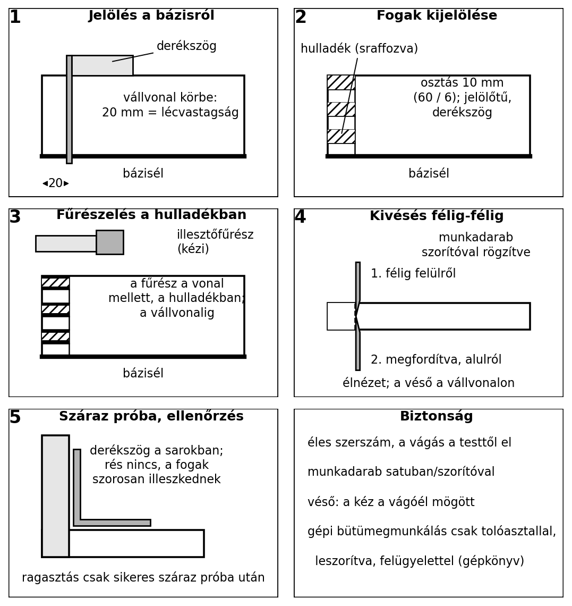

A szakmai képzés utolsó heteiben már nem az a kérdés, hogy tudsz-e fúrni, gyalulni vagy ragasztani. Az a kérdés, hogy egy megadott terméket önállóan, dokumentálva, határidőre, a vizsgabizottság előtt biztonságosan el tudsz-e készíteni. A vizsgaremek és a gyakorlati vizsgafeladat ezt méri: egyszerre vizsgálja a rajzolvasást, az anyagszámítást, a géphasználatot, a szerelést, a felületkezelést és a munkavédelmi fegyelmet. Aki a vizsgaremeket nem csak „csinálja”, hanem tervszerűen, a dokumentációjával összhangban építi, az akkor is nyugodt marad, ha a bizottság kérdez vagy egy gépi műveletet külön bemutattat.
Ebben a záró fejezetben a vizsgaremek teljes útját járjuk végig: kiválasztás, jóváhagyatás, dokumentáció, gyártás, munkanapló, gyakorlati vizsgafeladat és értékelés. A korábban tanult szabásjegyzék és anyagnorma, Műszaki leírás, műveletterv, technológiai leírás és gyártási folyamatábra, Keret- és kávaszerkezetű tömörfa szekrény gyártása és A gyártási folyamat megtervezése: műveletterv, gépválasztás, időnorma, ütemezés eredményeit itt egyetlen vizsgamunkában kapcsoljuk össze.
Képzeld el a vizsgaműhely asztalán a kész tölgyfa kávaszerkezetű faliszekrényt: 600 mm széles, 800 mm magas, 250 mm mély, egy betétes keretajtóval és két állítható polccal. Mellette fekszik a dokumentációs dosszié: elöl a címlap, utána az összeállítási rajz, a metszet, a csomóponti rajz, a szabásjegyzék, az anyagnorma, a folyamatábra, a technológiai leírás és az árkalkuláció. A munkanapló utolsó bejegyzése így szól: „Felületkezelés második réteg felhordva, száradás ellenőrizve, zár és pántok beállítva.” A bizottság először a dokumentumokat lapozza át, csak utána nézi a terméket: ha a rajz és a szabásjegyzék nem stimmel, a hiányosságot észre fogják venni.
Szabály. A vizsgaremek témáját a vizsgát szervező intézmény vizsgaszabályzata és az adott szakma vizsgakövetelménye határozza meg (ellenőrizendő: az aktuális vizsgaszabályzat és a szakképzési jogszabályok). A vizsgázó általában javaslatot tesz, amelyet az oktatóval egyeztet, majd az intézmény vagy a vizsgabizottság írásban jóváhagy.
A jóváhagyatás nem formalitás. A választott terméknek:
Példa. A faliszekrény alkalmas vizsgaremek, mert a kávasarkok fogazott kötéssel, az ajtókeret nyitott ollós csappal, a polcok polctartó csapokkal készülnek, a hátlap hornyolt nútba kerül, a teljes felület olajozott vagy lakkozott.
Túl nagy vagy túl bonyolult terméket ne válassz. Egy kapkodva készített nagy szekrény rosszabb benyomást kelt, mint egy pontosan megmunkált, kisebb káva- vagy keretszerkezetű bútor.
A dokumentáció kötelező elemei jellemzően az alábbiak (ellenőrizendő: az intézményi útmutatóban foglalt sorrend és formai követelmények):
| Dokumentum | Tartalom | Hol tanultad? |
|---|---|---|
| Műszaki rajzok | összeállítási rajz, metszetek, csomóponti rajzok, méretek, anyagjelölés | Vetületi ábrázolás: nézetek és nézetrend |
| Szabásjegyzék | minden alkatrész kész és nyers mérete, darabszáma, anyaga | Szabásjegyzék és anyagnorma |
| Anyagnorma | nettó anyagmennyiség, hulladék, kihozatal, bruttó szükséglet | Szabásjegyzék és anyagnorma |
| Műszaki leírás | anyagok, vasalatok, felületkezelés, szerkezeti megoldások | Műszaki leírás, műveletterv, technológiai leírás és gyártási folyamatábra |
| Gyártási folyamatábra | műveletsor, ellenőrzési pontok, gépek | Műszaki leírás, műveletterv, technológiai leírás és gyártási folyamatábra |
| Általános technológiai leírás | gépek, szerszámok, beállítások, biztonsági előírások | A gyártási folyamat megtervezése: műveletterv, gépválasztás, időnorma, ütemezés |
| Árkalkuláció | anyagköltség, munkabér, rezsi, önköltség, ár | Anyagszükséglet-számítás: tömörfa, lapanyag, élzáró, vasalat, ragasztó, felületkezelő |
| Munkanapló | dátum, művelet, gép/szerszám, anyag, ellenőrzés | jelen alfejezet |
A dokumentációt akkor is be kell adni, ha a termék kész. A hiányzó vagy ellentmondó dokumentum levonással jár.
A műszaki rajz a dokumentáció gerince. A faliszekrény példáján a rajz legalább három részből áll:
Elölnézet – hosszúság × magasság 600 × 800 mm; a kávák, a betétes ajtó, a polcosztás és a szerelvényhelyek látszanak. Az ajtó nyílása 560 × 760 mm (a 20 mm vastag kávák belső mérete). A méretvonalak a befoglaló méreteket és a polcok magassági osztását adják meg.
Oldalnézet metszetben – a metszősík a szekrény közepén, hátulról előre halad; a rajz mutatja a 250 mm mélységet, a tető és fenék káváját, a polc 220 mm mélységét, a hátlap hornyát, valamint a hátlap és a fal közötti távolságot.
Csomóponti rajzok – legalább kettő:
A rajzon a következőket kell jelölni:
A mintarajz tételszámai a szabásjegyzékkel egyeznek. Az ajtó a 560 × 760 mm-es nyílásban körben 2 mm hézaggal 556 × 756 mm; a betét a keret 436 × 636 mm-es belső nyílásánál a 2 · 8 mm nútmélységgel nagyobb, a 2 · 2,5 mm mozgási hézaggal kisebb: 447 × 647 mm. A mélység 4 (nút a hátsó éltől) + 6 (hátlap) + 220 (polc) + 20 (ajtó) = 250 mm. A HTML-kiadásban az egyes nézetek és tételek gombokkal kiemelhetők.
A szabásjegyzék a rajzból indul, és minden alkatrészt tételenként felsorol. A kész méret a megmunkálás utáni, a nyers méret a ráhagyással növelt méret. A ráhagyás hosszban, szélességben és vastagságban tájékoztató érték: hosszban 20–30 mm, szélességben 5–10 mm, vastagságban 1–2 mm (gépbeállítástól függ, ellenőrizendő).
| Tétel | Megnevezés | Db | Anyag | Kész méret h × sz × v (mm) | Nyers méret h × sz × v (mm) | Szálirány / élzárás | Megjegyzés |
|---|---|---|---|---|---|---|---|
| 1 | Oldalkáva | 2 | tölgy tömörfa | 800 × 250 × 20 | 830 × 260 × 22 | hosszirányban | fogazott sarok |
| 2 | Tető- és fenék-káva | 2 | tölgy tömörfa | 600 × 250 × 20 | 630 × 260 × 22 | hosszirányban | fogazott sarok |
| 3 | Ajtókeret függőleges | 2 | tölgy tömörfa | 756 × 60 × 20 | 780 × 65 × 22 | hosszirányban | nút a belső oldalon (ajtóhézaggal) |
| 4 | Ajtókeret vízszintes | 2 | tölgy tömörfa | 556 × 60 × 20 | 580 × 65 × 22 | hosszirányban | ollós csap (vállak között 436; csaphossz 60, átmenő) |
| 5 | Ajtóbetét | 1 | tölgy tömörfa | 447 × 647 × 10 | 460 × 660 × 12 | hosszirányban | mozgó betét (nútmélység 2 · 8, hézag 2 · 2,5) |
| 6 | Polc | 2 | tölgy tömörfa | 560 × 220 × 20 | 590 × 230 × 22 | hosszirányban | polctartó furatok |
| 7 | Hátlap | 1 | rétegelt lemez | 780 × 580 × 6 | 800 × 600 × 6 | nincs | nútba csúsztatva |
Az anyagnorma a nettó térfogatból és a kihozatalból számítja a bruttó fűrészáru-szükségletet.
Kidolgozott példa. A fenti táblázat nettó tömörfa térfogata:
A fűrészáru-kihozatal jellemzően 60–70% (tájékoztató, az anyag minőségétől és a vágásképtől függ). Ha 65%-kal számolunk, a bruttó szükséglet:
Rendelésnél 0,04 m³ tölgy fűrészárut veszünk figyelembe.
Az árkalkuláció bizonyítja, hogy a vizsgaremek anyag- és munkaköltségét is ki tudod számolni. A mintaárak nem valós piaci adatok; a számítás menetét mutatják.
| Költségsor | Mennyiség | Egység | Egységár (Ft) | Érték (Ft) |
|---|---|---|---|---|
| Tölgy fűrészáru | 0,040 | m³ | 350 000 | 14 000 |
| Rétegelt lemez hátlap | 0,50 | m² | 6 000 | 3 000 |
| Vasalat, polctartó, pánt, zár | 1 | csomag | 8 000 | 8 000 |
| Felületkezelő anyag | 1 | készlet | 2 500 | 2 500 |
| Közvetlen anyagköltség | 27 500 | |||
| Közvetlen bér (az ütemterv 7 munkanapjából ≈ 50 óra, tájékoztató) | 50 | óra | 6 000 | 300 000 |
| Bérjárulék | 13% | 39 000 | ||
| Általános költség (rezsi) | 1 | tétel | 15 000 | 15 000 |
| Önköltség | 381 500 | |||
| Nyereség | 10% | 38 150 | ||
| Nettó ár | 419 650 | |||
| ÁFA | 27% | 113 306 | ||
| Bruttó ár | 532 956 Ft ≈ 533 000 Ft |
A bérjárulék és az ÁFA mértéke időben változhat, ezért mindig ellenőrizd az aktuális jogszabályt. A bérsor óraszámát az ütemtervből számoltuk (7 munkanap, kb. 50 munkaóra); a minta órabér a tanulási példa szerinti 6 000 Ft/óra; éles kalkulációban a tényleges bérköltséggel számolj.
A vizsgaremek elkészítését legalább heti bontásban meg kell tervezni. A fejlesztés lépései a faliszekrényre:
Vizsgaremek-ellenőrzőlista.
A gyakorlati vizsgafeladat jellemzően egy kijelölt szerkezeti elem elkészítése vagy egy gépi művelet bemutatása a bizottság előtt. A pontos feladatot, az időtartamot és az értékelési arányokat a vizsgaszervező határozza meg (ellenőrizendő).
Legyen a példafeladat a faliszekrény fogazott kávás sarokkötésének elkészítése 90 perc alatt, előre gyalult, 20 × 60 × 300 mm-es tölgy lécekből.

Termék/alkatrész: 90°-os kávás sarokkötés
fogazással, 20 mm vastag tölgy elemekből
Anyag: gyalult tölgy léc 2 db, 20 × 60 × 300 mm,
fanedvesség 12 ± 2% (ellenőrizendő)
Gépek és szerszámok: asztalos marógép fogazó
szerszámmal, csapozószán (tolóasztal) és leszorító, körfűrész
tolóasztallal vagy haránt ütközővel, derékszögelő, vonalzó, szorító, D3
PVAc ragasztó, csiszolópapír
Gépbiztonság. A művelet betanított, felügyelt tanulónak szól; védőberendezés nélkül, egyedül, fáradtan ne végezd. A fogazó szerszámot csak a marógép védőburkolatával, leszorítóval és elszívással együtt használd. Forgó szerszám közelében tilos kesztyűt viselni, mert a szerszám beakaszthatja és a kezet behúzhatja. Viselj védőszemüveget, hallásvédőt és munkaruhát. A fapor ellen használj műhely-elszívást és FFP2 légzésvédőt. A gép beállítása és szerszámcsere előtt áramtalaníts és várd meg, amíg a szerszám teljesen leáll.
Indítás előtti ellenőrzés:
Számozott lépések:
A vizsgaremek végső minőségellenőrzését a beadás előtt magadnak kell elvégezned, mert a bizottság is ezeket a szempontokat nézi.
Eltérés esetén ne próbáld elrejteni a hibát. Javítsd ki dokumentáltan: igazítsd a pántot, csiszold újra a felületet, vagy ha szükséges, készítsd újra a hibás alkatrészt.
A rajz és a szabásjegyzék méretei
eltérnek.
Ok: a tanuló előbb készíti a szabásjegyzéket, mint a rajzot, vagy
„fejben” javít.
Helyes gyakorlat: a rajz kész méreteit másold át a szabásjegyzékbe, és
utólag ellenőrizd a tételszámok egyezését.
Az ajtóbetét ragasztva van.
Ok: a vizsgázó nem hagy mozgási hézagot, vagy a betétet is
beragasztja.
Helyes gyakorlat: a betétet szárazon, oldalanként 2–3 mm hézaggal
helyezd a nútba; a nedvesség hatására a tömörfa betét dagad, és
kifeszítheti a keretet.
A fogazott sarok hézagos.
Ok: nem készült próbadarab a gép beállításához, vagy a munkadarabot nem
szorosan vezették.
Helyes gyakorlat: minden gépi kötés előtt próbadarab, majd a beállítás
után csak az éles darabok megmunkálása.
A munkavédelmi ellenőrzőpontnál kesztyű.
Ok: a tanuló a hideg műhelyben megszokta a kesztyűt, vagy nem ismeri a
forgó szerszám veszélyét.
Helyes gyakorlat: forgó szerszámnál soha ne használj kesztyűt; a
marógépen, fűrészen, csiszológépen a kesztyű behúzási balesetet
okozhat.
A felületkezelés foltos.
Ok: nem készült próbadarab a pác/lakk keveréséből, vagy poros felületre
vitték fel az anyagot.
Helyes gyakorlat: próbadarab, pormentes műhely, a gyártói adatlap
szerinti hígítás és rétegfelépítés.
Tünet. A vizsgabizottság a faliszekrény ellenőrzésekor azt látja, hogy az ajtó a jobb felső saroknál szorul, és a bal alsó saroknál 1,5 mm-es hézag van.
Lehetséges okok.
- A kávasarok a préselés alatt elmozdult, így a szekrény nem
derékszögű.
- A betét túl széles, és kifeszítette az ajtókeretet.
- A pántok beállítása rossz, az ajtó ferde.
- A fa nedvességtartalma a szerelés után megváltozott.
Vizsgálat. A tanuló derékszögelővel ellenőrzi a szekrény káváját: az oldal és a tető derékszöge rendben. Az átlók közötti különbség 1 mm, ami tájékoztató tűrésen belül van. A betétet kézzel megmozgatja: az betét a nútban kissé szorul, mert a nútban ragasztófolyás maradt. A pánt állítócsavarját ellenőrzi: a felső pánt kissé behúzott.
Valódi ok. Az ajtókeret betétje túl szorosan illeszkedik, és a felső pánt rosszul lett beállítva. A sarokhézag a pánt ferde állásából adódik, nem a kávaszerkezet hibájából.
Javítás. A pántot utánállítják, a betét nútjában a ragasztófolyást éles vésővel eltávolítják. Az ajtót újra beállítják, majd a hézagot ellenőrzik.
Megelőzés. A szerelésnél mindig ellenőrizni kell a pántok síkját, a betét szabad mozgását és az ajtó derékszögét, mielőtt a vizsgaremeket beadnád.
Egy vizsgázó tanuló a faliszekrény dokumentációját az utolsó előtti napon állította össze. A szabásjegyzékben az oldalkáva kész méretét 780 mm-nek írta, mert „úgysem lesz senki olyan szigorú”. A rajz azonban 800 mm-t mutatott. A bizottság az ellentmondást azonnal észrevette, és a dokumentáció értékelésénél levont pontot. A tanuló a terméket egyébként jól készítette el, de a pontvesztés miatt a minősítése eggyel rosszabb lett. A tanulság: a dokumentációt nem a termék után kell „összecsapni”, hanem a rajzból kiindulva, a gyártás közben folyamatosan vezetni.
1. feladat (A). Sorolj fel legalább öt dokumentumot, amelyet a vizsgaremekhez be kell nyújtani.
2. feladat (A). Egy alkatrész kész mérete 800 × 250 × 20 mm. A ráhagyás hosszban 20 mm, szélességben 10 mm, vastagságban 2 mm. Add meg a nyers méretet mm-ben.
3. feladat (B). A szabásjegyzékben az alábbi sor áll
a faliszekrény tető- és fenék-kávájához:
Megnevezés: Tető- és fenék-káva, Db: 1, Kész méret: 600 × 200 × 20
mm.
A rajz szerint a szekrény mélysége 250 mm, és tetőből-fenékből összesen
2 darab kell. Mi a hiba, és mi lenne a helyes sor?
4. feladat (B). Számítsd ki a vizsgaremek nettó anyagköltségét az alábbi mintaadatokkal: tölgy fűrészáru 0,040 m³, egységár 350 000 Ft/m³; rétegelt lemez 0,50 m², egységár 6 000 Ft/m²; vasalat 8 000 Ft; felületkezelő anyag 2 500 Ft.
5. feladat (C). A vizsgabizottság azt tapasztalja, hogy az ajtókeret betétje nem mozog, és a keret sarokhézaga megnyílt. Sorold fel a lehetséges okokat, válaszd ki a legvalószínűbbet, és javasolj megelőzést a következő vizsgamunkához.
6. feladat (D). Készíts egy hetes ütemtervet a faliszekrény vizsgaremek elkészítésére. Naponként tüntesd fel a műveleteket, a gépeket/szerszámokat és az ellenőrzési pontokat. A táblázat legyen a munkanapló mintája is.
Önellenőrzés – válaszok
Feladatok válaszai
1. A bemutatható dokumentumok: műszaki rajzok, szabásjegyzék, anyagnorma, műszaki leírás, gyártási folyamatábra, általános technológiai leírás, árkalkuláció, munkanapló.
2. Nyers hossz = 800 + 20 = 820 mm; nyers szélesség = 250 + 10 = 260 mm; nyers vastagság = 20 + 2 = 22 mm. A nyers méret: 820 × 260 × 22 mm.
3. Hibák: a darabszám 1, de a rajz szerint tető és fenék két darab; a szélesség 200, de a rajz szerint 250 mm. Helyes sor: Tétel: 2, Megnevezés: Tető- és fenék-káva, Db: 2, Anyag: tölgy, Kész méret: 600 × 250 × 20 mm, Nyers méret: 630 × 260 × 22 mm.
4. Tölgy: Ft; rétegelt lemez: Ft; vasalat: 8 000 Ft; felületkezelő: 2 500 Ft. Nettó anyagköltség = 27 500 Ft.
5. Lehetséges okok: a betét túl széles, a nútba ragasztó folyt, a betét nedvességet vett fel, a keret derékszöge rossz, a préselés közben a keret elmozdult. A legvalószínűbb: a betétnek nincs mozgási hézagja, ezért a dagadó fa kifeszíti a keretet. Megelőzés: oldalanként 2–3 mm hézag, a betétet ne ragasszuk; a nút tisztítása; a keretet présben derékszögben tartsuk.
6. Minta heti ütemterv:
| Nap | Műveletek | Gépek/szerszámok | Ellenőrzés |
|---|---|---|---|
| 1. nap | Anyagkiosztás, szabás túlmérettel | szalagfűrész, kézi fűrész | anyaghibák, méretek |
| 2. nap | Egyengetés, vastagolás, méretre vágás | egyengető, vastagsági gyalu, körfűrész | bázislap–bázisél, derékszög |
| 3. nap | Fogazás, ollós csapozás, nútmarás, polc fúrás | alsómaró, hosszlyukfúró, sorozatfúró | próbadarab, hézagok |
| 4. nap | Száraz illesztés, ragasztás, préselés | szorítók, ragasztóterítő | derékszög, átlók, présidő |
| 5. nap | Csiszolás, felületkezelés első réteg | csiszológép, lakkszóró, ecset | felületminőség, porszárazság |
| 6. nap | Felületkezelés második réteg, szerelés | szerszámok, csavarhúzó, furatkészítő | pántok, zár, ajtó beállítás |
| 7. nap | Végső minőségellenőrzés, dokumentáció összeállítása | mérőeszközök, rajz, jegyzékek | a teljes ellenőrzőlista |
A vizsgaremek a szakmai képzés záró munkája: a tanuló választott terméket készít, és ahhoz teljes műszaki dokumentációt ad be. A dokumentáció kötelező elemei a műszaki rajzok, a szabásjegyzék, az anyagnorma, a műszaki leírás, a gyártási folyamatábra, az általános technológiai leírás, az árkalkuláció és a munkanapló. A rajz és a szabásjegyzék méreteinek pontosan egyezniük kell. Az anyagnorma a nettó térfogatból és a kihozatalból számítja a bruttó anyagszükségletet: , ahol a kihozatal (pl. 0,65). Az árkalkuláció a közvetlen anyag-, bér-, bérjárulék- és rezsiköltségből áll, ehhez jön a nyereség és az ÁFA. A gyakorlati vizsgafeladatot a vizsgaszervező határozza meg; gépi műveletnél a védőberendezés használata, a tolófa és a légzésvédelem kötelező, kesztyű forgó szerszámnál tilos. A vizsgaremeket derékszög, méret, hézag, mozgó betét, felület és vasalat-működés szerint ellenőrizd. Továbbvitt eredmény. A vizsgaremek a könyv záró eredménye: itt fut össze a faanyagismeret, a szakrajz, a kötések, a gépek, a ragasztás, a felületkezelés, a szerelés és a kalkuláció minden korábbi alfejezetben tanult eleme.
Felhasznált forrástípusok: a szakképzési vizsgaszabályzat és az intézményi vizsgarend (ellenőrizendő: az aktuális jogszabály és a vizsgakövetelmények); a könyv korábbi alfejezetei, különösen Műszaki leírás, műveletterv, technológiai leírás és gyártási folyamatábra, Szabásjegyzék és anyagnorma, Keret- és kávaszerkezetű tömörfa szekrény gyártása és A gyártási folyamat megtervezése: műveletterv, gépválasztás, időnorma, ütemezés; faipari gépkönyvek és biztonsági szabványok (MSZ EN ISO 19085 sorozat, ellenőrizendő); D3-as PVAc ragasztóra vonatkozó MSZ EN 204 osztályok (ellenőrizendő: a kiválasztott ragasztó adatlapja); faanyag-nedvességre és mozgási hézagra vonatkozó szakkönyvi táblázatok (ellenőrizendő).
Ellenőrizendő: a vizsgaremek pontos formai követelményei, beadási határideje és értékelési szempontjai; a gyakorlati vizsgafeladat időtartama és jellege; a mintaárak, órabére, bérjárulék- és ÁFA-mértékek; a fogazó szerszám beállítási paraméterei és a préselési idő; a fanedvesség és a mozgási hézag tájékoztató értékei.